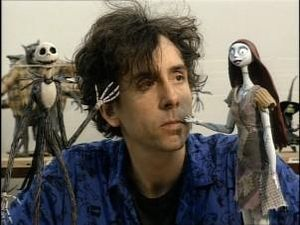

Tim Burton
 De: La Frikipedia, la enciclopedia extremadamente seria.
De: La Frikipedia, la enciclopedia extremadamente seria.
De la serie grandes personajes:
Un hombre que parió hijos... Creo que está claro, ¿no?
| Nacimiento
|
Hace mil años, parió dos Emos.
|
| Muerte
|
Jamás, no dejará de crear películas que procreen nuevos emofloides :S
|
| Ocupación
|
Dictador de Emolandia, director a ratos,follar con cadaveres.
|
| Nacionalidad
|
Egpañol, aunque dice que es de los EEUU
|
| Malo o bueno
|
Malo, pero malo malote.
|
| Atentados contra la humanidad
|
Conquistar Emolandia, y en ella, llevar a cabo planes malvados para conquistar el mundo exterior.
|
| Religión
|
Jackistianismo.
|
| Notas
|
Pues un 5 pelao' en dibujo, un 8 en Inglés, un 4 en Ética...
|
«Hola me llamo Tim Burton y hago películas»
~ Tim abriendo su corazón al público
«Mis pinículas no son raras, Jane»
~ Tim hablando con la mujer de Tarzán
Dictador de Emolandia, enamorado perdidamente de Johnny Depp, padre de los dos Emos Originales Kleín y Mabel. Y Gran director de cine al que nunca se le ha ido la pinza aparte del ostentador del record por fumar mas mota en una noche (cuando hizo la pelicula de folladita antes de navidad). Hay dos teorías que dicen porque es así, una de ellas dice que pasó una mala infancia, (lo adoptó uno de los actores de los teletubies) y cada mes había un día que llevaba a tu hijo al trabajo más lo que debía de ver en su casa.... entonces cuando sus amigos (los reales) le decían que si jugaban, él decia que prefería quedarse a pensar en su mounstritos y cosas absurdas (raro en él) y la otra es que de pequeño no tenía tele y se tenía que imaginar sus propias historias que cada vez eran mas raras y encima sus amiguitos del alma le ponían pastillas para flipar en la comida, entonces cada vez que se aburía se leía un cómic y esto le afectó bastante hasta el grado de escribir las historias que escribió, también hay otra teoría que dice que en realidad las dos primeras teorías son ciertas. (Así que imagínate como debe ir el panorama)
Sus primeros cortos
En realidad este ser se hizo famoso porque su hermano (también adoptado por Tinki Winki), se hizo buen actor y como él no iba a ser menos le pidió a su hermano que le enchufara en ese mundo y publicó las historias que se imaginaba de pequeño, entonces un niño un poco transtornado que tenía un padre millonario que vivía en Maiami vió una de sus... "pelis" y le gustó, así que se lo contó a su padre y el padre lo hizo millonario y publicó sus películas para que el niño no le tocara mucho los cojones. Como no se veían pagó millones a otras películas para que pusieran publicidad subliminal (la imagen de una pelicula de Tim burton con una tía desnuda sacada de playboy al lado) y curiosamente las pelis de Tim Burton se volvieron las más vistas por hombres (no se sabe porque esas pelis no eran vistas por ningún melacorte y tuvo éxito entre las adolescentes desencaminadas).
Mejores éxitos
 El extraño mundo de
este pendejo Tim Burton
Entre sus mejores películas se encuentran:
- Mars Attack: Película muy... bueno trata sobre unos marcianos con la cabeza de tres metros y medio que venian en son de paz, pero como la historia iba a ser aburrida (más aún) decidió que los marcianos se cargaran todo lo que encontraban con pistolas de agua cargadas con su propia orina (no vean los efectos que tenía sobre la piel humana), y así se lo cargaban todo hasta que a una abuelita le dió por escuchar a los Red Hot Chili Peppers y curiosamente a los marcianos se les rebentaba la chota, un poco... original, no... (¿No podía hacer que la abuela cojiera un bazoca iónico y se los puliera a todos?)
- El hollow durmiente: Película bastante buena que representa que es de terror, aunque creo que se equivocó con los conceptos porque yo lloré cuando la vi... (me dio pena que hubieran directores de cine así hoy en día) Aunque hay que reconocer que era bastante buena porque veamos, para una película no-original que hace... (Un tío sin cabeza matando al personal, gran idea nunca vista...)
- Pez grande: Gran película, sobretodo porque salen chinas de 5 cabezas, (vale, la acabo de ver y son dos cabezas) monos gigantes y frikadas que resultaron ser fantasías de Tim y su hermano cuando trabajaban de monaguillos y probaban nuevas experiencias.
- Charlie y la Fábrica de Chocolate: Película vergonzosa que va de un tío que tiene una fábrica de chocolate muy rara con duendes raros y frikadas (para variar) en la que el protagonista se llama Willy Woncker, (pajeador en inglés) y por eso no quiero ni saber de que va la trama... Aunque, claro, como es un remake, no se puede pedir gran originalidad de tema...
- Pesadilla antes de navidad: Película que fue demandada por plagio a los documentales de Freddy Krugger... Eso es lo que pensé cuando la vi... No la he visto, no hace falta solo viendo la publicidad te quedas como... wtf? Y encima se dice que los monigotes de la película son dibujos que hacía de pequeño (le enseñó a dibujar su padre, Tinki Winki, así que...) yo recomiendo que ésta película se vea para que sepáis que los dibujos animados que echan hoy en día no son tan malos... solo hay que comparar con Mickey Mouse...
- La novia cadáver: Es un hombre que al parecer es muy patoso y no puede casarse con su mujer (que ni siquiera conoce). Cuando se va al bosque para recitar los votos, al parecer se los dijo a una mujer que... Bueno estaba muerta (con eso ya esta todo dicho)la pelicula acaba en que ella se convierte en maripositas azules y los otros, victor y victoria (descuiden, no eran hermanos) se casan.
- Sweeney Todd: Sweeney Todd es la historia de un hombre de Londres, llamado Benjamin Barker, que se quiere vengar del juez Turpin. (Vaya nombres más raros ¿no?) La pinícula está basada en un musical de Brodway, asi que como el nombre indica, se tiran TODA la
puñetera peli cantando. Además, la sangre se ha convertido misteriosamente en una substancia extraterrestre de color naranja, aqui llamada "Salsa de tomate con queso". O al menos, tiene el mismo color.
- Alicia en el País de las
Pornopesadillas Maravillas: Es la historia clásica donde una chiquirriquitina se cae a un hoyo de un campo de golf conejo que aparentemente tiene prisa pero la verdad solo queria conseguir la atención de la niña para gustarle (Y NO ME REFIERO COMO AMIGA La verdad si me refiero como amiga pero quiero asustaros)La Historia se centra en la "aventura" de una Alicia incorrecta con un par de amigas ya crecidas ( ͡° ͜ʖ ͡°)
Conquista de Emolandia
Para más detalles, ver Emolandia, aqui os hago un resumencito, resumidito, resumidito.
Despues de parir a los Dos Emos Originales y darlos en adopción porque Mabel era negra, se entera de que han fundado una ciudad, asi que decide ir y conquistar el trono que "le pertenece". Mabel está muerta, hecha a Kleín de la ciudad, y se queda con todo, porque es guay. Es malo, ¿eh? ¿Te pone verdad? Sí, sí, no lo puedes negar. ¡MUAHAHAHAHAHAHA!... Si, bueno, eso.
¿Sabias que...
- ...El porno para Tim Buron es lo mismo que el terror?
- ...Por muchos porros que fumes, no superaras al colocon que tiene este
emo director?
Autor(es):
- Krusher
- Fordus
- Roms
- Viento
- Haratoma
- Guilfer
- Z
- Alex el Mono
- Rogalmar
- Lalala
Frikipedia 2005-2016, Licencia
GFDL 1.2 - Extraído por FrikiLeaks